Sora_4 : Bond fendant
Poignet naturel : bras releve avant l'armee, plus de retournement de l'avant-bras après l'impact (garde-fou de visee).
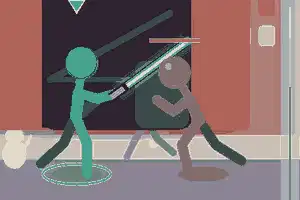

Images-cles
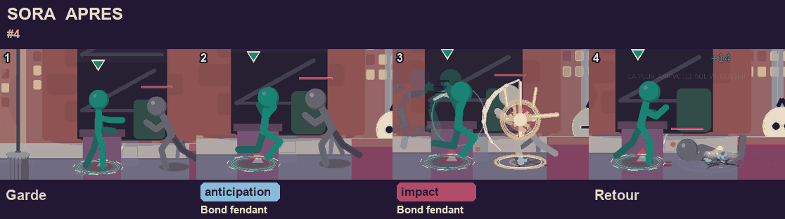
Avant = version de la page remplacements, après = vrai moteur actuel (même case, mêmes images et dégâts).
Poignet naturel : bras releve avant l'armee, plus de retournement de l'avant-bras après l'impact (garde-fou de visee).


Même animation validee, titre renomme.
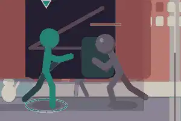

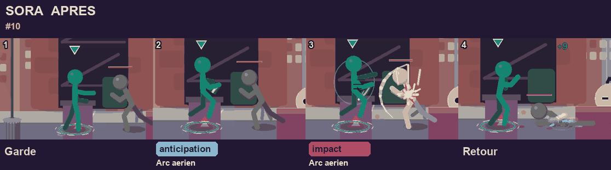
Retour a l'ancienne version (impact plus sensible).
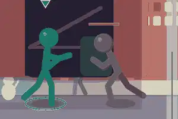

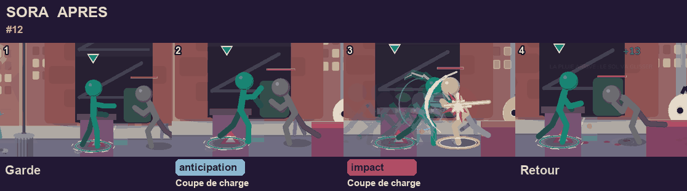
Poignet dans l'amplitude humaine (max 113 deg, avant 174).
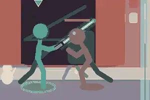
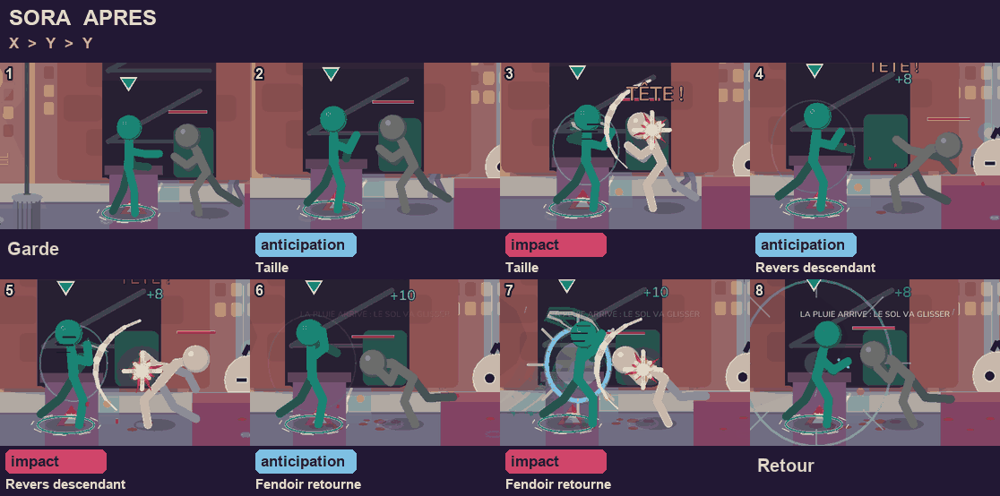
Refait : taille horizontale en l'air, le bras suit la lame (poignet max 34 deg).
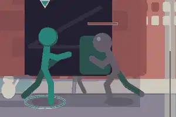
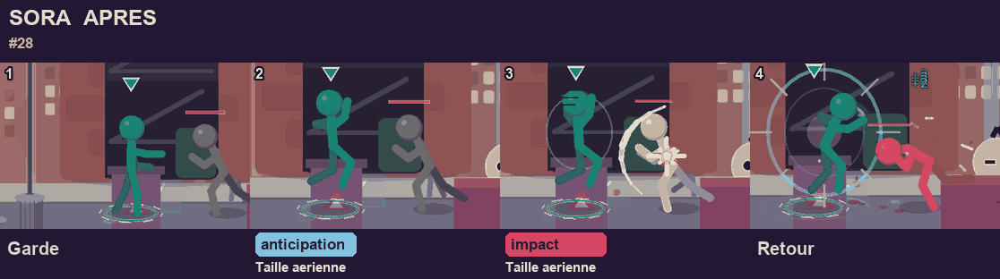
Coup large : grand pas, jambes ecartees, bras arrière ouvert, estoc bras tendu.
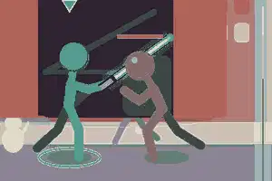
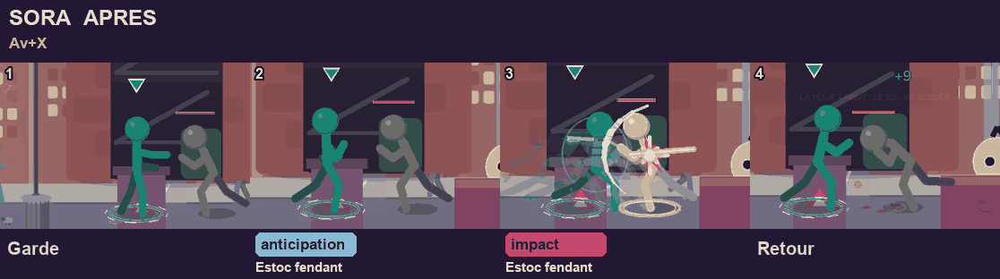